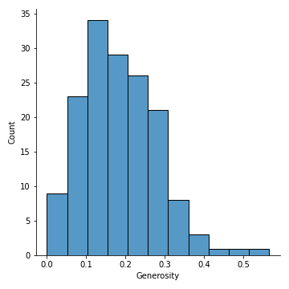
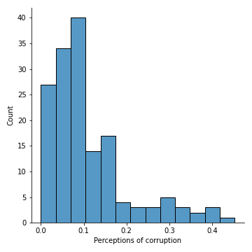
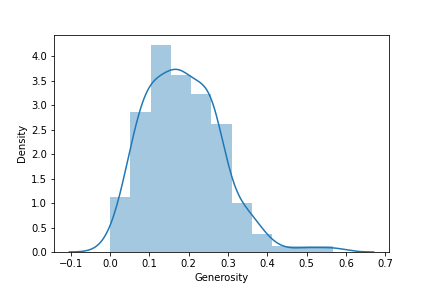
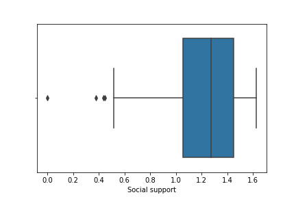
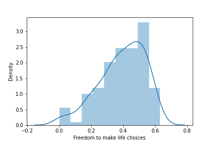
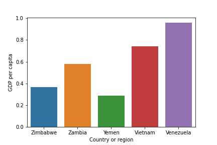
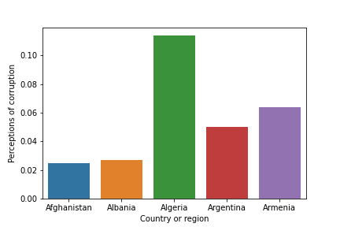

Business Insight

Central Tendency (Titik Pusat Data)
Dispersion (Persebaran Data)

Dispersion (Persebaran Data)

Dispersion (Persebaran Data)

Distribution (Distribusi Data)

Distribution (Distribusi Data)

kolom Social support memiliki lower outliers sebanyak 4

kolom Freedom to make life choices memiliki persebaran data terbanyak di 0.3 sampai 0.5+ dan memiliki positive tail / memiliki lower outliers

Zimbabwe, Zambia, Yemen, Vietnam dan Venezuela merupakan 5 negara yang memiliki GDP per capita tertinggi

Afghanistan, Albania, Algeria, Argentina dan Armenia merupakan 5 negara yang memiliki Perceptions of corruption terendah